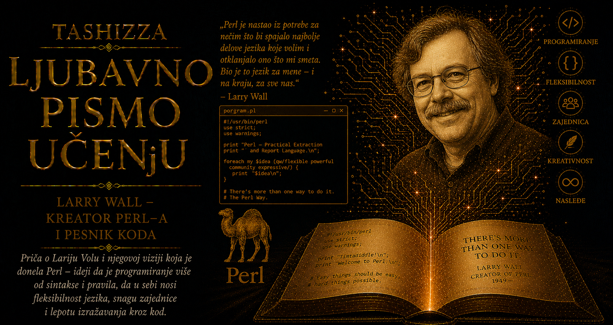

Ljubavno pismo učenju

U istoriji računarstva postoje ljudi koji su u programskim jezicima tražili savršen red, verujući da će se ljudska zamisao, očišćena od svake nepreciznosti, konačno smestiti u besprekoran formalni sistem. Larry Wall krenuo je putem bližim svakodnevnom životu. Posmatrao je kako ljudi govore, pišu, skraćuju, greše, pozajmljuju reči, menjaju redosled misli i biraju različite izraze za slično značenje. U toj razuđenosti prepoznavao je prilagodljivost živog jezika. Kada je stvarao Perl, želeo je da programer zadrži nešto od sopstvenog načina razmišljanja i onda kada razgovara sa mašinom.
Njegova životna priča zato povezuje programera, lingvistu, pripovedača i čoveka koji je umeo da u plodnoj napetosti zadrži naizgled suprotne osobine. Wall je bio duboko religiozan i sklon nestašnom humoru, nenametljiv u ophođenju i dovoljno smeo da izmisli sopstveni programski jezik, zaljubljen u praktične alate i istovremeno očaran filozofijom, književnošću i mnogostrukim značenjima reči. Tehničku ideju umeo je da objasni gramatičkom metaforom, teološkom slikom ili dosetkom čiji se puni smisao otkriva tek posle razmišljanja. Sintaksa je u njegovim rukama postajala trag čovekovog odnosa prema slobodi, autoritetu, zajednici i stvaralaštvu.
Larry Arnold Wall rođen je 27. septembra 1954. godine u Los Anđelesu, a deo detinjstva proveo je u Bremertonu, u saveznoj državi Vašington. Odrastao je u porodici snažno povezanoj sa protestantskim verskim životom: njegov otac i oba dede bili su pastori. U takvom okruženju Biblija je bila knjiga vere, ali i složen svet jezika, prevoda, tumačenja, pripovedanja i nijansi. Reči su nosile istoriju, moralnu težinu i posledice, a razumevanje teksta zahtevalo je pažnju prema onome što je izgovoreno, kao i prema onome što je ostalo prećutano. Ta rana bliskost sa jezikom kasnije će se prepoznati u njegovoj osetljivosti prema kontekstu i uverenju da značenje retko stanuje samo u pojedinačnoj reči.
Kao mladić nije odmah pronašao jednu oblast kojoj bi se potpuno predao. Na Seattle Pacific Universityju istraživao je hemiju, muziku i predmete potrebne za studije medicine, a ta kolebanja svedočila su o radoznalosti koja se teško mirila sa granicama jedne tradicionalne discipline. Hemija mu je približila strukture i preobražaje, muzika ritam i odnose, medicina složenost živih sistema. Kada je počeo da radi u univerzitetskom računarskom centru, pronašao je prostor u kojem su nauka, zanat, stvaralaštvo i igra mogli da se susretnu. Računarstvo je tada još bilo dovoljno mlado da su njegovi putevi ostajali otvoreni ljudima neobičnog obrazovanja i širokih interesovanja.
Wall je završio studijski program koji je sam oblikovao i nazvao „prirodni i veštački jezici”. Taj naziv zvuči kao sažetak njegovog budućeg rada. Prirodni jezici nastajali su u zajednicama, menjali se tokom vekova i nosili tragove susreta različitih kultura, dok su veštački jezici pokušavali da misao prevedu u precizna pravila. Wall je između tih svetova video čitav niz veza: oba imaju rečnik, gramatiku, kontekst, prećutne pretpostavke, izuzetke, istoriju i zajednicu koja im daje život. Njegova kasnija originalnost izrasla je upravo iz spremnosti da znanje iz jedne oblasti prenese u drugu.
Važan deo tog intelektualnog i životnog puta bila je njegova supruga Gloria Biggar Wall. I ona je proučavala jezike, istoriju i kulturu, a zajedno su se pripremali za rad sa zajednicama čiji jezici još nisu imali razvijen sistem pisanja. Nameravali su da proučavaju jedan nedovoljno dokumentovan jezik, pomognu u oblikovanju pisma i učestvuju u prevođenju tekstova, uključujući Bibliju. Takav poduhvat zahteva duboko slušanje, jer prevodilac mora da razume kako ljudi iskazuju vreme, srodstvo, dužnost, zabranu, nadu i svetost, kao i način na koji kroz jezik uređuju sopstveni svet.
Larry i Gloria prošli su lingvističku i antropološku obuku povezanu sa Summer Institute of Linguistics i organizacijom Wycliffe Bible Translators, a zatim nastavili postdiplomske studije lingvistike na univerzitetima Kalifornije u Berkliju i Los Anđelesu. Planirani odlazak u inostranstvo napustili su zbog zdravstvenih okolnosti. Životni pravac za koji su se dugo pripremali time je izmenjen, ali znanje stečeno na tom putu nije iščezlo. Wall nije otišao da pomaže u zapisivanju jezika udaljene zajednice; vratio se računarima i vremenom stvorio jezik kojim će govoriti zajednica rasuta širom sveta.
Gloria je ostala njegova saputnica kroz godine učenja, porodičnog života i rada, a zajedno su podigli četvoro dece. Wall je u javnim nastupima često ostavljao utisak čoveka koji sebe ne izdvaja iz odnosa koji su ga oblikovali. Njegove živopisne košulje, karakteristični brkovi, neobični šeširi i predavanja puna lingvističkih vratolomija privlačili su pažnju, ali je iza razigrane pojave stajalo ozbiljno uverenje o služenju drugima. Dobar alat trebalo je da ljudima olakša rad, dobar jezik da prihvati različite načine mišljenja, a autor da razume kako delo koje pokloni zajednici vremenom prerasta njegove lične namere.
Pre Perla Wall je radio u NASA-inom Jet Propulsion Laboratoryju, a zatim na poslovima sistemskog programiranja i administracije. Računarski sistemi različitih proizvođača tada su često ličili na odvojena kraljevstva, pa su programeri mnogo vremena trošili na prilagođavanje softvera, obradu tekstualnih datoteka i povezivanje alata koji nisu bili zamišljeni da sarađuju. Wall se već u tim godinama pokazivao kao graditelj praktičnih mostova. Njega su naročito privlačila mesta na kojima čovek ponavlja dosadan posao ili gubi vreme zato što je alat slabo prilagođen stvarnim potrebama.
Napravio je rn, čitač poruka sa Useneta, velike rane mreže diskusionih grupa, oblikujući ga tako da se prilagođava navikama korisnika. Razvio je i patch, program koji primenjuje zapisane razlike između verzija datoteka. U kulturi slobodnog softvera patch je postao gotovo nevidljiva infrastruktura saradnje: programeri su mogli da razmenjuju precizne skupove izmena umesto čitavih novih kopija izvornog koda. Još pre stvaranja svog poznatog jezika Wall je pokazao trajni stvaralački instinkt da prepozna trenje u ljudskom radu i pretvori ga u priliku za bolji alat.
Iz takvog iskustva potekla je njegova čuvena pohvala „lenjosti”, „nestrpljenju” i „oholosti” kao velikim vrlinama programera. Provokativnim rečima davao je posebno zanatsko značenje: lenjost pokreće čoveka da jednom uloži ozbiljan napor kako isti zamoran posao više ne bi obavljao ručno, nestrpljenje ga podstiče da napravi program koji blagovremeno odgovara potrebama korisnika, dok oholost označava profesionalni ponos zbog kojeg želi da napiše delo vredno poštovanja. Humor je pretvarao neprijatne ljudske osobine u ogledalo kroz koje programer može da prepozna i preispita sopstvene pobude.
Wall je umeo da u običnoj frustraciji otkrije opštiji princip. Smetala mu je nepotrebna sporost, posebno ona koja nastaje kada je alat neprilagođen čovekovom načinu mišljenja. Njegova „lenjost” označavala je stvaralačku ekonomiju, „nestrpljenje” brigu o vremenu, a „oholost” zahtev da zanat zadrži dostojanstvo. Kasnije je tim vrlinama pridružio marljivost, strpljenje i poniznost, pokazujući koliko mu je bilo blisko mišljenje u ravnotežama. Programeru je potrebna želja da automatizuje posao i istrajnost da automatizaciju izvede pažljivo, nezadovoljstvo lošim alatom i strpljenje prema ljudima koji uče, kao i ponos da stane iza svoga rada uz spremnost da prihvati tuđu ispravku.
Kada se 1987. godine našao pred složenim zadatkom povezivanja podataka sa više računarskih sistema, Wall je najpre pokušao da upotrebi postojeće alate. Bio je dovoljno iskusan da zna koliko lako stvaralac može da proglasi lokalnu teškoću razlogom za izmišljanje čitavog novog jezika. Ipak, problem se uporno opirao urednom rešenju. Nedostajao mu je alat koji bi spojio lakoću Unix skripti, sposobnosti programa awk i sed, strukture poznate iz C-a i mogućnost da složen posao ostane izražen u jednom programu. Iz te praktične potrebe, propuštene kroz znanje lingviste i maštu pripovedača, nastao je Perl.
Prva verzija objavljena je 18. decembra 1987. godine. Wall je ime povezivao sa „biserom velike vrednosti” iz jevanđeljske parabole, dok je slovo a izostavljeno jer je naziv Pearl već bio upotrebljen za drugi programski jezik. Tumačenje „Practical Extraction and Report Language” pojavilo se kao duhovito naknadno proširenje imena, u skladu sa Wallovom sklonošću prema jezičkim igrama. Perl je zaista započeo kao praktičan instrument za izdvajanje podataka i pravljenje izveštaja, ali se u njegovom imenu od početka osećalo da tvorac u korisnom alatu vidi i nešto dragoceno.
Wall nije težio jezičkoj čistoti. Perl je pozajmljivao oblike i mogućnosti iz C-a, Unix komandnog okruženja, awk-a, sed-a i drugih izvora, slično prirodnim jezicima koji u sebi nose tragove vekovnih susreta. Vrednost jezika merio je njegovom sposobnošću da primi potrebe korisnika i izrazi njihove zamisli. Iz tog odnosa nastalo je načelo da postoji više načina da se nešto uradi, koje je programeru davalo slobodu da rešenje prilagodi problemu, sopstvenom iskustvu i čitaocu kome će kod jednoga dana dospeti u ruke.
Ta jezička gostoljubivost izražavala je Wallovo poverenje u ljude, ali ih je istovremeno suočavala sa odgovornošću. Perl je mogao da bude razgovetan u rukama pažljivog autora i gotovo zagonetan kada se sažetost pretvori u pokazivanje virtuoznosti. Wall je razumeo da bogat rečnik sam po sebi ne stvara dobru prozu; sloboda izražavanja dobija vrednost tek kada autor misli o onome ko će njegove reči ili njegov kod kasnije čitati. Programiranje je tako postajalo oblik komunikacije, a čitljivost način poštovanja budućeg saradnika.
Njegov odnos prema zajednici posebno se video u predavanjima poznatim kao „State of the Onion”, čiji je naslov duhovito podsećao na američke govore o stanju nacije. Luk mu je služio kao slika jezika i zajednice sastavljene od mnogih slojeva. Tvorac se nalazio u sredini, dok su najveći deo celine činili ljudi koji pišu module, dokumentaciju i knjige, održavaju sisteme, organizuju susrete i pomažu početnicima. Wall je bio svestan značaja svoje početne ideje, ali je razumeo da je Perl postao mnogo veći od jednog autora.
Ta predavanja prerasla su u poseban književno-tehnički žanr. Wall je prelazio sa teorije jezika na otvoreni kod, sa biblijskih aluzija na programerske šale, sa budućnosti Perla na pitanja ljudske saradnje. Njegov humor ublažavao je hijerarhije koje se u tehničkim zajednicama lako stvaraju kada se znanje pretvori u sredstvo zastrašivanja. Pokazivao je da ozbiljan rad može biti praćen razigranošću i da učitelj ne mora da umanji slušaoca kako bi pokazao širinu sopstvenog znanja.
Knjiga Programming Perl, koju su u prvom izdanju napisali Larry Wall i Randal Schwartz, postala je poznata kao „Knjiga kamile” zbog životinje na koricama. Kamila je ubrzo prerasla u prepoznatljiv simbol Perl kulture: izdržljiva, pomalo neobična i sposobna da pređe velike udaljenosti noseći težak teret. Randal Schwartz, Tom Christiansen i mnogi drugi autori, programeri i urednici pomagali su da Wallove ideje postanu dokumentacija, knjige i znanje dostupno širokoj zajednici, dok je Tim O’Reilly rano prepoznao kulturni značaj jezika i podržao njegov razvoj. Tako je oko koda nastao čitav svet priča, simbola, priručnika, susreta i osećanja pripadnosti.
Devedesete godine donele su Perlu veliko širenje. Internet je rastao brže nego što su organizacije uspevale da ga razumeju, serveri su proizvodili ogromne količine tekstualnih podataka, a administratori povezivali nove i stare tehnologije pod stalnim pritiskom. Perl se dobro snalazio u takvom svetu zato što je umeo da uđe u postojeću neuređenost, pronađe obrazac i obavi potreban posao. Jezik nastao radi izveštaja stigao je i u laboratorije bioinformatike, gde su dugi nizovi slova predstavljali genetske podatke koje je trebalo pretraživati, porediti i preoblikovati. Znanja koja su nekada izgledala razdvojeno ponovo su se sastala u delu čoveka koji je proučavao hemiju, medicinu, muziku, lingvistiku i računarstvo.
Veliki uspeh doneo je i teret nagomilane istorije. Kada je krajem devedesetih započelo promišljanje budućeg Perla 6, Wall je pozvao zajednicu da predloži mogućnosti, promene i ispravke. Odgovarao je dokumentima koje je, u skladu sa svojim humorom i verskim obrazovanjem, nazivao apokalipsama, egzegezama i sinopsisima. Njegova sposobnost da istovremeno vidi veliki broj mogućnosti davala je projektu izuzetnu širinu, ali je otežavala brzo donošenje konačnih odluka. Ambiciozni razvoj trajao je godinama, dok se svet softvera menjao sve bržim ritmom.
U toj dugoj priči Wall se pokazao kao darovit stvaralac podložan sumnji, preispitivanju i posledicama sopstvenih velikih zamisli. Zajednica ga je volela, kritikovala, podržavala i požurivala, dok je projekat tražio vlastiti identitet. Perl 6 je naposletku izrastao u zaseban jezik koji je 2019. godine dobio ime Raku, a Perl je nastavio svojim putem. Razdvajanje je obema zajednicama donelo jasniji prostor za razvoj i još jednom potvrdilo Wallovu duboku naklonost prema postojanju više valjanih puteva.
Tokom karijere dobio je brojna priznanja, među kojima se izdvaja prva nagrada Free Software Foundationa za unapređenje slobodnog softvera 1998. godine. Pobeđivao je i na takmičenjima u namerno zamršenom pisanju programa u jeziku C, što je savršeno odgovaralo njegovoj ljubavi prema jezičkim igrama. Iza javnog govornika ostajao je introvertan čovek koji je više voleo komunikaciju u kojoj ima vremena da oblikuje misao nego oblike neposrednog prekidanja i stalne dostupnosti.
Wall je programske jezike posmatrao gotovo kao antropolog među logičarima. Primećivao je da programerske zajednice razvijaju dijalekte, šale, tabue, običaje, simbole i načine prenošenja znanja. Razumeo je da uspeh jezika zavisi od mnogo više činilaca nego što su teorijska elegancija i tehnička brzina. Ljudi moraju moći da ga usvoje, da u njemu prepoznaju sopstvene probleme, da napišu knjige i biblioteke, da pomažu početnicima i da osete kako njihovo iskustvo pripada zajedničkom poduhvatu.
Kada je programski jezik opisivao kao „amoralni umetnički medij”, branio je slobodu izražavanja od tehničke pravovernosti koja jedan stil unapred proglašava jedinim dostojnim. Prirodnim jezikom mogu se napisati molitva, ugovor, ljubavno pismo i obmana; sredstvo pruža mogućnost, dok moralna odgovornost ostaje na čoveku koji ga koristi. Wall je verovao da dizajner jezika treba da otvori prostor za različite zamisli, a da autor programa snosi odgovornost za jasnoću, svrhu i posledice onoga što u tom prostoru stvara.
Njegovo nasleđe obuhvata mnogo više od sintakse Perla. Pokazao je da računarstvo može plodno da uči od lingvistike, da je program namenjen ljudima koliko i procesorima i da praktičan alat može nositi duboku filozofiju. Otvorenost je u njegovom radu značila poverenje praćeno odgovornošću, dok je stvarni svet prihvatao kao složen prostor u kojem se dobra rešenja rađaju iz povezivanja iskustava, umesto iz odbacivanja svega što narušava zamišljenu čistotu.
Wall je tokom života zadržao sposobnost da ne bira prerano između suprotnosti. Voleo je slobodu i razumeo potrebu za disciplinom, slavio stvaralačku lenjost i neumorno radio, govorio o profesionalnoj oholosti i svoj značaj smeštao u malo središte velikog luka zajednice. Potekao je iz sveta vere, a stvorio programski jezik otvoren prema različitim stilovima mišljenja. Pripremao se da proučava i zapisuje tuđe jezike, a završio stvarajući novi jezik za ljude koji razgovaraju sa mašinama.
Upravo zbog toga njegova priča pripada ljubavnom pismu učenju. Wall nije sticao znanje da bi se zatvorio u jednu oblast; prelazio je iz hemije u muziku, iz medicine u računarstvo, iz lingvistike u programiranje, noseći iz svakog susreta ideju koja će kasnije pronaći neočekivanu primenu. Njegov put podseća da napuštena interesovanja često ostaju tiho prisutna u čoveku, čekajući trenutak kada će se povezati sa novim iskustvom i postati deo rešenja koje ranije nije mogao ni da zamisli.
Perl je zato nalik portretu svoga autora: praktičan, duhovit, slojevit, ponekad protivrečan, spreman da prihvati dobru ideju bez obzira na njeno poreklo i nepoverljiv prema čistoti koja se postiže osiromašivanjem života. Iza njegovih neobičnih simbola i sažetih izraza nalazi se duboko ljudska poruka da preciznost potrebna mašini ne mora da uguši slobodu potrebnu čoveku. Larry Wall je toj slobodi dao gramatiku, a zajednici poverio da je dalje razvija.